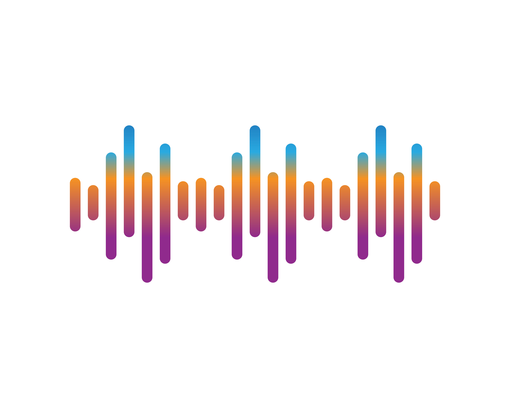

Pengalaman Pertama Belajar Web
Diposting 12 April 2025
Hari ini saya belajar membuat halaman web sendiri menggunakan HTML dan Tailwind CSS.

Oleh Nabil Alfathan.
Explore our collection of beautiful fonts!
The quick brown fox jumps over the lazy dog.
Font sans-serif yang bersih dan sangat umum digunakan.
The quick brown fox jumps over the lazy dog.
Font serif klasik yang populer di dokumen resmi dan akademik.
The quick brown fox jumps over the lazy dog.
Font default Microsoft Office, modern dan profesional.
The quick brown fox jumps over the lazy dog.
Jenis huruf tanpa kait, tampilan minimalis dan modern.
The quick brown fox jumps over the lazy dog.
Font serif elegan dengan kontras tinggi, cocok untuk cetak.
The quick brown fox jumps over the lazy dog.
Font modern dan fleksibel, sering dipakai di Android.
The quick brown fox jumps over the lazy dog.
Font serif klasik, sangat bagus untuk teks panjang dan cetak.
The quick brown fox jumps over the lazy dog.
Font dengan "kaki" pada huruf, memberi kesan tradisional dan formal.
The quick brown fox jumps over the lazy dog.
Font sans-serif ikonik, sangat netral dan sering dipakai dalam desain grafis.
The quick brown fox jumps over the lazy dog.
Font serif yang didesain agar nyaman dibaca di layar.
Explore popular image file formats!
Lossy compression, best for photos with small file size.
Supports transparency, great for icons and UI.

High Efficiency Image File Format(e.g. iPhone).
Uncompressed format, large file size but high quality.
Unprocessed image from camera sensor for editing flexibility.
Simple animation format, widely used online.
Modern web format with high compression and quality.
High-quality format used in publishing and archiving.
Used for favicons and icons on Windows systems.
Cursor image format used in Windows applications.
Explore 10 popular audio formats with the standard player!
Format audio lossy paling populer dengan dukungan luas dan ukuran file kecil.
Format audio tanpa kompresi, kualitas tinggi, cocok untuk profesional.
Penerus MP3 dengan efisiensi kompresi lebih baik dan kualitas tinggi.
Format buatan Microsoft dengan kualitas yang baik pada bitrate rendah.
Format audio lossless buatan Apple, mirip WAV dengan metadata lebih lengkap.
Format lossless milik Apple, efisien untuk kualitas tinggi di ekosistem iOS/macOS.
format kompresi audio yang sering digunakan komunikasi suara dan layanan telepon seluler.
Format lossless open-source dengan kompresi efisien dan kualitas tinggi.
Format audio open-source dengan kompresi tinggi, sering digunakan di game dan aplikasi web.
Format modern untuk streaming dan suara real-time dengan kualitas sangat baik.
Discover common video file formats used across platforms.
Widely used format with great compression and compatibility.
Old Microsoft format, supports many codecs but larger size.
Flexible container format, great for HD videos and subtitles.
Apple QuickTime format, high quality and editing friendly.
Windows Media Format, used in legacy Microsoft systems.
Used for Flash video content, now deprecated but still seen.
Open-source format for web use, good quality and compression.
High definition format for digital recording and playback.
Mobile video format optimized for 3G networks.
Used in DVDs and broadcasting; older but still used.
Exploration of various animation techniques used in the modern and classic film industry.
Hand-drawn animation frames; classic Disney style.
credit : https://youtu.be/H6zogr_1NsM?si=3OqEwifT6TvskahU
Computer-aided 2D animation; used in TV shows and web series.
credit : https://youtu.be/EEa-bJorKZE?si=_7UEqjIprgM_h8JM
Computer-generated 3D models; used in Pixar movies.
credit : https://youtu.be/p5bSBENMoeM?si=YOvny4csbBiF3Alq
Frame-by-frame photography of physical models.
credit : https://youtu.be/MEglOulvgSY?si=pqunipjW_1TRCcyU
Capturing real actor movements for digital characters.
credit : https://youtu.be/9DCkjkCR3gQ?si=6ndJuPxEiJ73ffwL
the creation of visual content, still or animated images, using computer software.
credit : https://youtu.be/QczTAcqtUk4?si=08gJ2m9Jdw-XMhBD
Tracing over live footage to produce animation.
credit : My Own Creation
A form of stop motion using clay models.
credit : https://youtu.be/kA2XrXeHSRg?si=pjvKFs_0wC4BO7iA
VR animation is a form of 3D animation designed to be enjoyed in a VR environment.
credit : https://youtu.be/f00N2lZkI1Y?si=_U494dQouND2RW4f
Combining live-action and animated elements.
credit : https://youtu.be/Jm-4nqjq47s?si=JkbtGfq_4UNbISRl
Diposting 12 April 2025
Hari ini saya belajar membuat halaman web sendiri menggunakan HTML dan Tailwind CSS.
Diposting 8 April 2025
Coding membuat saya bisa menciptakan sesuatu dari nol, dan itu memberikan rasa kepuasan tersendiri...